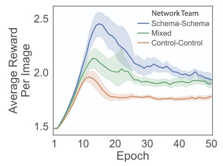
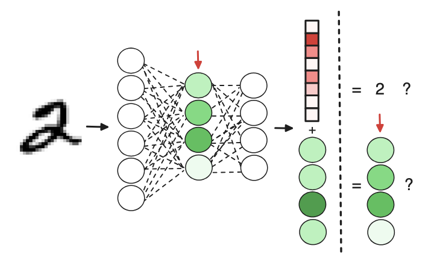
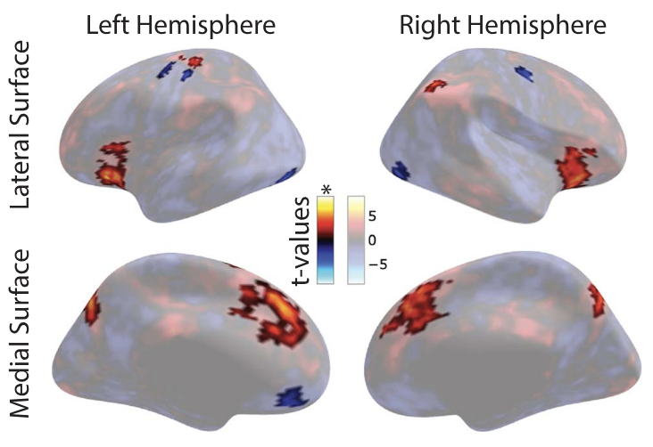
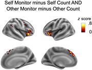
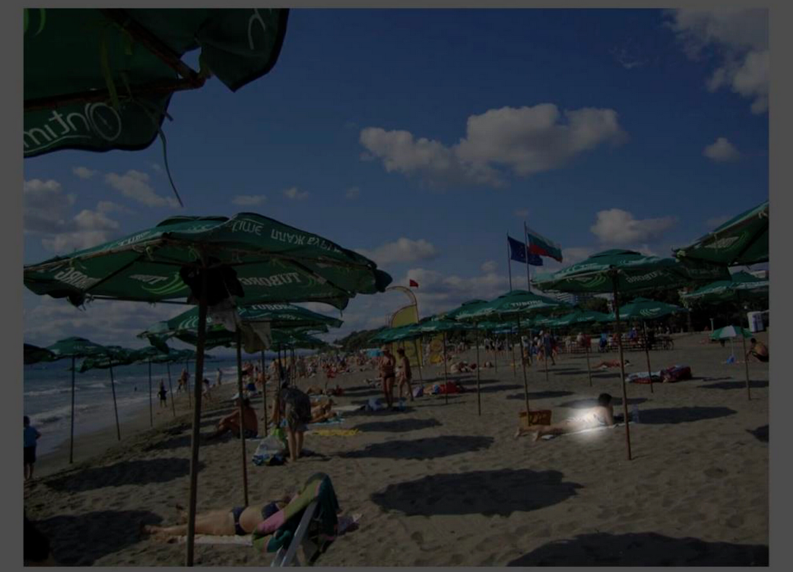
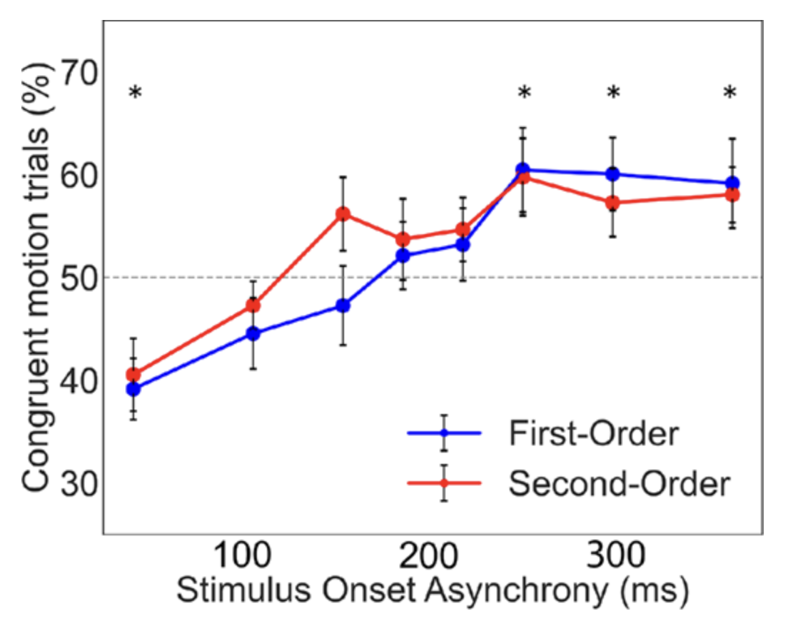
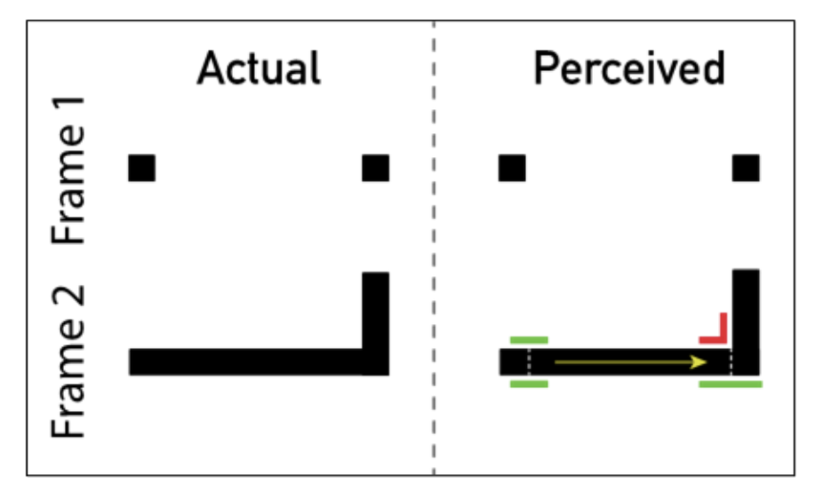
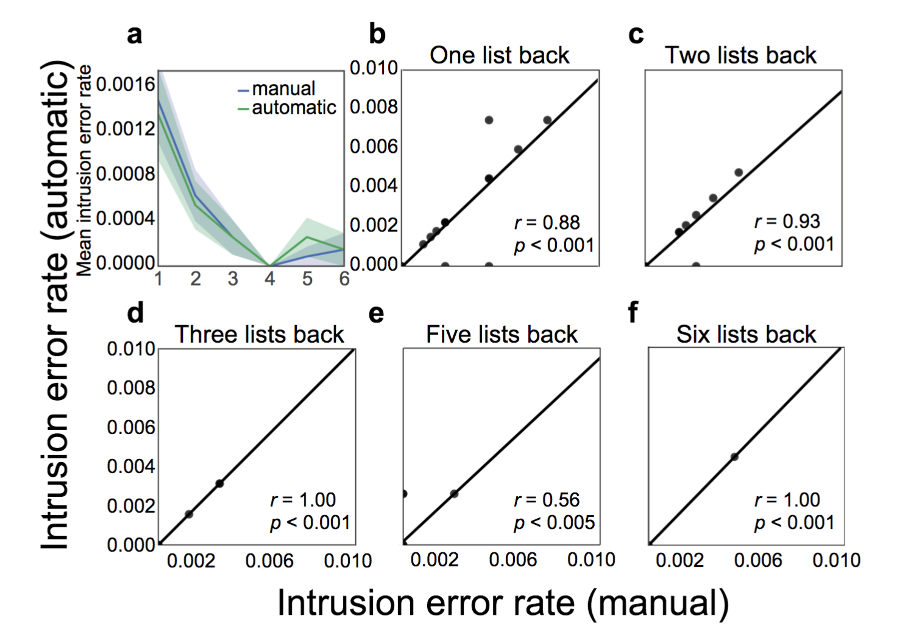

Research
I am a cognitive neuroscientist at the Princeton Neuroscience Institute. I study social attention in people and AI.
My work combines behavioral experiments, brain imaging, computational methods, and clinical collaborations.
Publications
-

Improving how agents cooperate: attention schemas in artificial neural networks
Farrell K. T., Ziman K., Graziano M. S. A. (2025). Preprint, arXiv:2411.00983.
-

Unexpected benefits of self-modeling in neural systems
Premakumar V. N., Vaiana M., Pop F., Rosenblatt J., Schwerz de Lucena D., Ziman K., Graziano M. S. A. (2026). Philosophical Transactions of the Royal Society A: Mathematical, Physical and Engineering Sciences, 384(2320).
-

Cortical networks active when modeling the attention of others
Ziman K., Kimmel S. C., Christian I., Farrell K. T., Graziano M. S. A. (2025). Cerebral Cortex, 35(9), bhaf266.
-

Monitoring attentional state in self and others
Christian I., Nastase S. A., Yu M., Ziman K., Graziano M. S. A. (2025). Journal of Cognitive Neuroscience, 1-11.
-

Predicting the Attention of Others
Ziman K., Kimmel S. C., Farrell K. T., Graziano M. S. A. (2023). Proceedings of the National Academy of Sciences, 120(42), e2307584120.
-

Endogenous attention biases transformational apparent motion based on high-level shape representations
Saleki S., Ziman K., Hartstein K. C., Cavanagh P., Tse P. U. (2022). Journal of Vision, 22(12), 16-16.
-

First- and second-order transformational apparent motion rely on common shape representations
Hartstein K. C., Saleki S., Ziman K., Cavanagh P., Tse P. U. (2021). Vision Research, 188, 246-250.
-

HyperTools: A Python toolbox for gaining geometric insights into high-dimensional data
Heusser A. C.*, Ziman K.*, Owen L. L. W., & Manning J. R. (2018). Journal of Machine Learning Research, 18(152), 1-6.
-

Is automatic speech-to-text transcription ready for use in psychological experiments?
Ziman K., Heusser A. C., Fitzpatrick P. C., Field C. E., & Manning J. R. (2018). Behavior Research Methods, 50(6), 2597-2605.
-
Quail: A Python toolbox for analyzing and plotting free recall data
Heusser A. C., Fitzpatrick C. P., Field C. E., Ziman K., & Manning J. R. (2017). The Journal of Open Source Software, 2, 424.